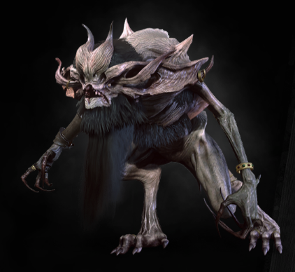

|  |
Bestiary Description:Melitele, Great Mother, protect us from evil, from unclean devils and foul demons, and most of all from the clutches of katakans and nekurats...
— fragment of a prayer
Katakans and their more dangerous kin, nekurats, are the embodiments of human fear. They hide in the shadows. They feed on blood. They resemble enormous bats —though with long fangs and even longer talons. And, as if that weren't terror enough, they can turn invisible, waiting unseen while dread of their unpreventable attack overwhelms their victim. |